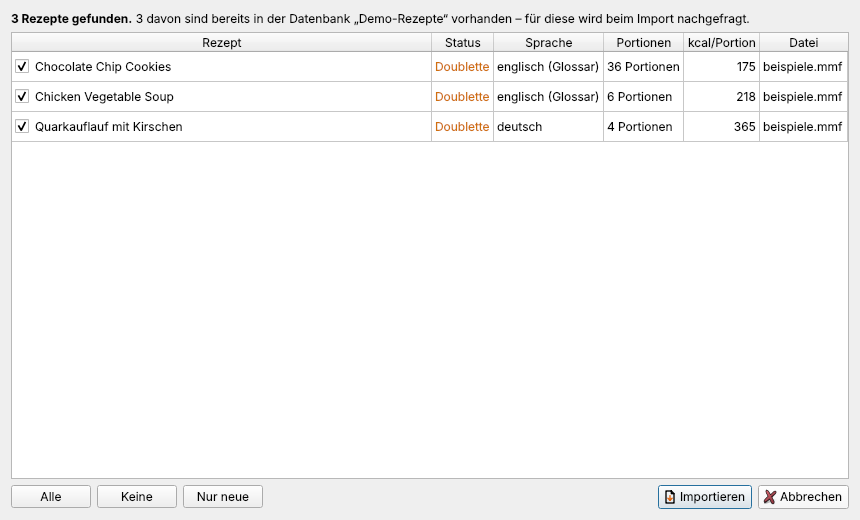
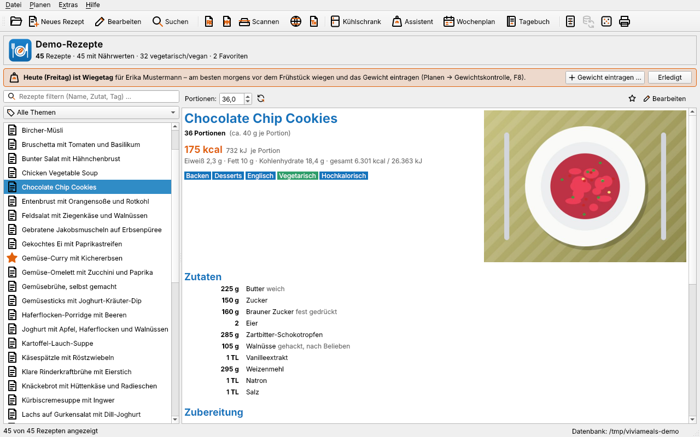
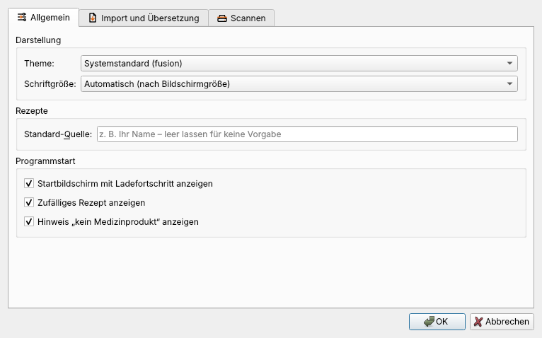
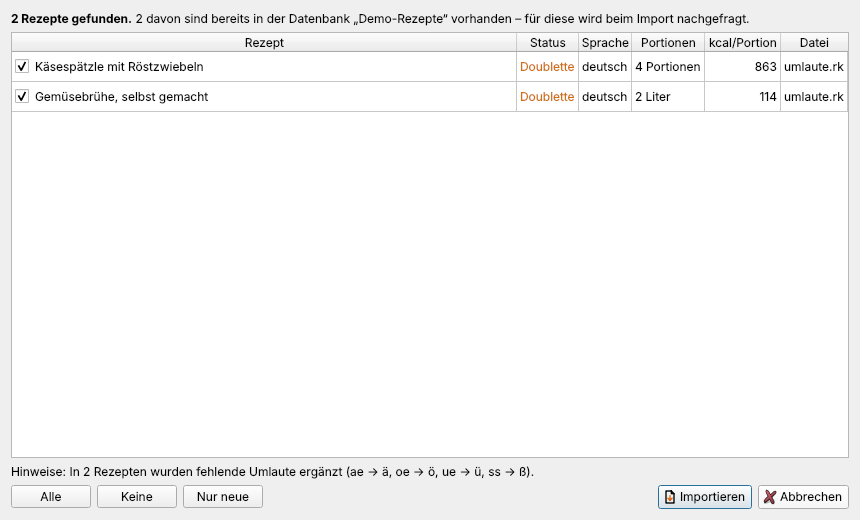

Rezepte importieren
ViviaMeals übernimmt Rezepte aus den verbreiteten Austauschformaten RezKonv und MealMaster – einzelne Rezepte ebenso wie Sammlungen mit Tausenden Rezepten. Dabei werden die Texte gleich aufbereitet: Zeichensatz erkennen, englische Maße umrechnen, fehlende Umlaute ergänzen, Nährwerte und Tags berechnen.
Ablauf
Datei → Import → RezKonv-Rezepte importieren … bzw. MealMaster-Rezepte importieren … wählen.
Eine oder mehrere Dateien auswählen (RezKonv:
.rk,.rkv,.txt; MealMaster:.mmf,.mm,.mxp,.txt).Die Vorschau zeigt alle gefundenen Rezepte mit Portionen, kcal je Portion, Sprache und Status.

- Mit den Häkchen wählen Sie aus, welche Rezepte übernommen werden. Alle, Keine und Nur neue helfen bei großen Sammlungen.
- Die Spalte Status meldet „neu“ oder „Doublette“, wenn ein gleiches Rezept schon in der Datenbank steht.
- Hinweise über der Liste nennen z. B., in wie vielen Rezepten Umlaute ergänzt wurden.
Importieren übernimmt die gewählten Rezepte. Bei jeder Doublette fragt ViviaMeals nach: Überspringen, Ersetzen oder Beide behalten – mit „Für alle weiteren Doubletten dieses Imports übernehmen“ nur einmal.
Zum Schluss nennt ViviaMeals, wie viele Rezepte neu aufgenommen, ersetzt und übersprungen wurden. Haben Zutaten keine Nährwerte, bietet es an, sie anzulegen oder zuzuordnen (Zutaten ohne Nährwerte).
Rezeptdateien lassen sich auch per Doppelklick oder über die Kommandozeile übernehmen (siehe Kommandozeile).
Was beim Import passiert
- Zeichensatz: UTF-8, Windows-1252 und der alte DOS-Zeichensatz CP850 werden erkannt – Umlaute erscheinen richtig, auch bei Dateien aus den 1990er-Jahren.
- RezKonv-Besonderheiten: gekürzte Titel (über „O-Titel“), „Prise/n“, „Kugel(n)“, „Zitrone: Saft“, „à 125 g“, Abschnitte und Fortsetzungszeilen.
- MealMaster: zweispaltige Zutatenlisten, Abschnitte und Quellenangaben. Von RezKonv erzeugte MealMaster-Dateien (z. B. aus Kochkiste-Archiven) werden erkannt; ihre Angaben „Quelle“ und „Erfasst … von“ landen in der Quelle statt in den Zutaten.
- Temperaturen werden einheitlich geschrieben: aus „200GradC“, „200 Grad C“ oder „200°C“ wird „200° C“, auch in Bereichen („180-200° C“).
- Menüfolgen (nur Gerichtnamen ohne Mengen) werden als Menü angezeigt und nicht als Rezept berechnet.
- Tags für Ernährung, Mahlzeit und Nährwerte werden ergänzt, wenn das in den Einstellungen eingeschaltet ist (Vorgabe).
Englische Rezepte
Englischsprachige Rezepte werden auch ohne Internetverbindung verständlich:
- Maße: cups → ml bzw. g (über die Dichte der Zutat), oz und lb → g, fl oz, pint, quart → ml, tbsp/tsp → EL/TL, „1 stick butter“ → 113 g, „1 (16 oz) can“ → 454 g.
- Zutaten: über ein eingebautes Wörterbuch übersetzt – „chopped walnuts“ wird zu „Walnüsse, gehackt“.
- Temperaturen und Längen in der Anleitung: °F → °C, Zoll → cm.
Ohne DeepL bleibt die Zubereitung selbst englisch; die Ansicht weist darauf hin.

Übersetzen mit DeepL
Wer fremdsprachige Rezepte vollständig auf Deutsch haben möchte – Titel, Zutaten und Zubereitung – oder Rezepte auf Französisch, Italienisch, Spanisch oder Niederländisch importiert, kann den Übersetzungsdienst DeepL einschalten.
- Nur fremdsprachige Rezepte werden übersetzt; deutsche Rezepte werden nie an DeepL gesendet.
- Die Übersetzung ist freiwillig und ab Werk ausgeschaltet.
- Sie benötigen einen eigenen DeepL-Schlüssel. Der Tarif DeepL API Free ist kostenlos und erlaubt 500.000 Zeichen im Monat – genug für etwa 200 bis 400 Rezepte.
Einrichten
- Auf https://www.deepl.com/pro-api den Tarif DeepL API Free wählen und ein Konto anlegen. (DeepL erfasst zum Schutz vor Missbrauch Zahlungsdaten; der Free-Tarif kostet trotzdem nichts.)
- Im DeepL-Konto unter API Keys den Schlüssel kopieren. Er hat die Form
xxxxxxxx-xxxx-xxxx-xxxx-xxxxxxxxxxxx:fx. - In ViviaMeals Extras → Einstellungen → Import und Übersetzung öffnen.
- Im Abschnitt Übersetzung fremdsprachiger Rezepte (DeepL) das Häkchen setzen und den Schlüssel einfügen.
- Verbindung testen – angezeigt werden Tarif und Verbrauch des laufenden Monats.

Beim Import und danach
- Nach dem Einlesen prüft ViviaMeals die Sprache jedes Rezepts und fragt nach, ob die fremdsprachigen übersetzt werden sollen – mit der Zahl der Zeichen, die an DeepL gehen. Maße und Temperaturen werden vorher umgerechnet.
- Die Spalte Sprache der Vorschau zeigt z. B. „englisch → DeepL“ oder „englisch (Glossar)“.
- Einzelne vorhandene Rezepte übersetzt Mit DeepL übersetzen im Editor, alle auf einmal Extras → Fremdsprachige Rezepte mit DeepL übersetzen ….
- Klappt die Übersetzung nicht (falscher Schlüssel, Kontingent erschöpft, keine Verbindung), wird das Rezept trotzdem importiert – mit dem eingebauten Wörterbuch.
Datenschutz: Bei eingeschalteter Übersetzung sendet ViviaMeals Titel, Zutaten und Zubereitung fremdsprachiger Rezepte verschlüsselt an die DeepL SE in Köln. Deutsche Rezepte, Fotos, Profile und alle übrigen Daten verlassen den Rechner nicht. Beim kostenlosen Tarif behält sich DeepL vor, Texte zeitweise zu speichern und zur Verbesserung zu verwenden. Persönliches gehört daher nicht in Rezepte, die übersetzt werden sollen.
Umlaut-Korrektur
Viele ältere Rezeptsammlungen sind ohne Umlaute geschrieben: „Kaese“, „Gemuesebruehe“, „heiss“. ViviaMeals erkennt solche Rezepte beim Import und schreibt sie richtig – dadurch findet auch die Nährwerttabelle die Zutaten wieder.

- ae, oe, ue werden zu ä, ö, ü – außer, wo das falsch wäre: nach einem Selbstlaut (Feuer, Sauerbraten), nach „q“ (Quelle) und in bekannten Wörtern wie aktuell, Baguette, Fondue, Michael, Aloe.
- ss wird nur in bekannten Wortstämmen zu ß: heiß, weiß, groß, gießen, Soße, süß, Grieß … Wasser, Schüssel, Nuss und muss bleiben, wie sie sind.
- Großgeschriebene Zwischenüberschriften („FUER DEN TEIG“) werden zu „Für den Teig“.
- Rezepte, die schon echte Umlaute enthalten, bleiben unangetastet.
Die Korrektur ist in den Einstellungen abschaltbar. Für bereits vorhandene Rezepte gibt es Extras → Umlaute in allen Rezepten korrigieren … (mit Beispielen und Rückfrage) und im Editor die Schaltfläche Umlaute korrigieren. Ein seltener Fehlgriff, etwa bei einem Eigennamen, lässt sich im Editor von Hand zurücknehmen.
Weitere Formate
- Datei → Import → ViviaMeals-Rezept (.vmr) importieren … – einzelne Rezeptdateien, z. B. per E-Mail erhalten oder aus einer Sicherungskopie.
- Datei → Import → Rezeptpaket (.vmpack) übernehmen … – ganze Sammlungen von anderen ViviaMeals-Nutzern (Rezeptpakete).
- Datei → Import → Alte ViviaMeals-Liste (.vtm) importieren … – Listen aus der ersten Fassung des Programms.
- Datei → Import → Rezept scannen … – gedruckte Rezepte (Rezepte scannen).